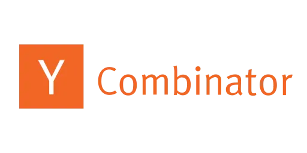
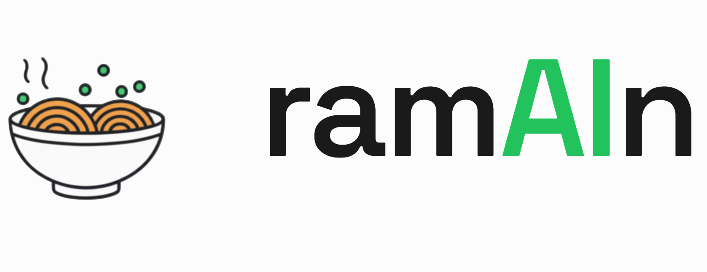

| Startup & Entrepreneurship |

Y Combinator W26
Nov 2025
$500K Funding
|
Accepted into Y Combinator Winter 2026 batch.
Building 
ramAIn — building super fast computer use agents.
|
| Research & Academic Scholarships |
CSE Research Accelerator Fund
2025
₹2,50,000 INR
|
Awarded Conference Grant/Scholarship for attending ICLR 2025
in Singapore. This prestigious fund supports outstanding student research and conference participation,
enabling presentation of our paper "Bonsai: Gradient-free Graph Distillation for Node Classification."
|
Danish Data Science Academy Scholarship
2024
15,000 DKK (₹1,80,000 INR)
|
Awarded prestigious research visit grant by DDSA,
funded by Novo Nordisk and VILLIUM DEVELOPERS. This scholarship supported my research collaboration
at the University of Copenhagen on
high-dimensional nearest neighbor search algorithms.
|
| Industry Competitions & Hackathons |
Lam Research Challenge 2024
National Champions
₹5,00,000 INR
|
Achieved First Position in 5-axis Robotic arm design competition.
Led team "Pi Propulsion" through three intensive rounds among 2,500 students from 153 universities across India.
Final challenge involved designing and building a 4-axis robotic arm for semiconductor wafer handling at
IISc Bangalore.
Team: Vansh Ramani, Reeshabh Kotecha, Dhruv Joshi, Nakshat Pandey
|
Citadel Securities Quants Arena
2024
First Position
|
Secured First Position in the Data Challenge created by
Dr. Giovanni Carù.
Solved complex problems involving probability theory, linear systems, and quantum mechanics. Developed
innovative algorithms for reconstructing global probability distributions and Bell's Theorem applications.
Technical Focus: Non-Negative Linear Systems, CHSH Inequality, Quantum State Measurement
|
Goldman Sachs India Hackathon
2024
Rank 4/8,000
|
Achieved All India Rank 4 among 8,000 participants from India's
premier institutions. Advanced to finals at Goldman Sachs
Bengaluru office after ranking 5th in preliminaries. Tackled challenging problems in SQL query engines,
graph theory, and OMR sheet processing.
Technical Challenges: AST-based SQL engines, Chinese Postman Problem, Modified Catalan Numbers
|
Eightfold AI Hackathon
2024
Judge & Problem Curator
|
Curated problem statement and served as judge for INNOV8 2.0 hackathon with a prize pool of
₹4,25,000 INR. Contributed to designing challenging problems
in AI/ML domain and evaluated innovative solutions from participants across multiple universities.
|
Deepfake Detection CodeWar
BECon 2024, IIT Delhi
₹50,000 INR
|
Won First Position with innovative ensemble learning approach
achieving 93% accuracy. Developed multimodal system combining MTCNN-EfficientNet frame classification
with audio-visual fact-checking mechanism.
Collaborator: Dhruv Joshi
|
IIT Delhi Merit Award
2024
₹2,500 INR
|
Awarded Merit Prize and Certificate for ranking among top 7%
in the institute based on academic performance. This recognition is given to students who demonstrate
exceptional academic excellence across all subjects.
|
JEE Advanced 2023
Engineering Entrance
Top 0.5%
|
Ranked among Top 0.5% of 1.2 million candidates in India's
most prestigious engineering entrance examination. This achievement secured admission to the Indian
Institute of Technology Delhi, one of India's premier technical institutions.
|
JEE Mains 2023
National Level Examination
Top 1%
|
Achieved rank in Top 1% of 1.2 million candidates in
national-level engineering entrance examination. This performance qualified for JEE Advanced and
demonstrated strong foundation in mathematics, physics, and chemistry.
|
UGEE 2023
IIIT Hyderabad Entrance
AIR 153
|
Secured All India Rank 153 in IIIT-Hyderabad undergraduate
engineering entrance examination (UGEE). This competitive examination tests aptitude in computer science
and mathematics for admission to specialized CS programs.
|
Swaraj India Public School
2023
Gold Medal
|
Awarded Gold Medal of Excellence for achieving
Class Rank 1 among 500 students. Maintained consistent
academic excellence throughout higher secondary education with CGPA of 9.65/10.
|
| Problem Solving & Programming |
Digital Enigma @ TRYST
IIT Delhi
₹5,000 INR
|
Awarded 2nd Position in computer science problem solving
competition at IIT Delhi's annual technical festival. Demonstrated exceptional algorithmic thinking
and programming skills in competitive programming environment.
|
American Chemical Society Speaker
2024
Invited Speaker
|
Honored to be invited as speaker at the American Chemical Society
and BioPractify's 38th Students Journal Club and Networking Program. Presented on "Undergrad Research:
Navigating AI for Applied Sciences" focusing on Graph Neural Networks applications in drug discovery
and molecular modeling.
Topics: GNN applications, Sustainable AI practices, Computational chemistry
|
Research Paper Publications
2024-2025
Peer-Reviewed
|
ICLR 2025: "Bonsai: Gradient-free Graph Distillation for Node Classification" -
Top-tier ML conference publication
ACS JCTC 2024: "Graph Neural Networks for Predicting Solubility in Diverse Solvents
Using MolMerger" - Leading computational chemistry journal
Impact: Advancing state-of-the-art in graph neural networks and molecular property prediction
|
Carnegie Mellon University
Research Internship
Summer 2024
|
Selected for competitive research internship at CMU's
Machine Learning Department under Prof. Pradeep Ravikumar.
Worked on cutting-edge research in causal representation learning, neurosymbolic AI, and machine unlearning
with provable guarantees.
|
University of Copenhagen
Research Visit
Summer 2024
|
Conducted research at DIKU, University of Copenhagen
under Dr. Panagiotis Karras.
Developed novel algorithms for high-dimensional nearest neighbor search, contributing to advancement in
spatial databases and machine learning applications.
|
ICLR 2025 Singapore
Conference Presentation
April 2025
|
Presented research paper at ICLR 2025 in Singapore,
one of the world's most prestigious machine learning conferences. Engaged with leading researchers
including Prof. Michael Bronstein,
sharing insights on graph neural networks and receiving valuable feedback from the global AI community.
|
|